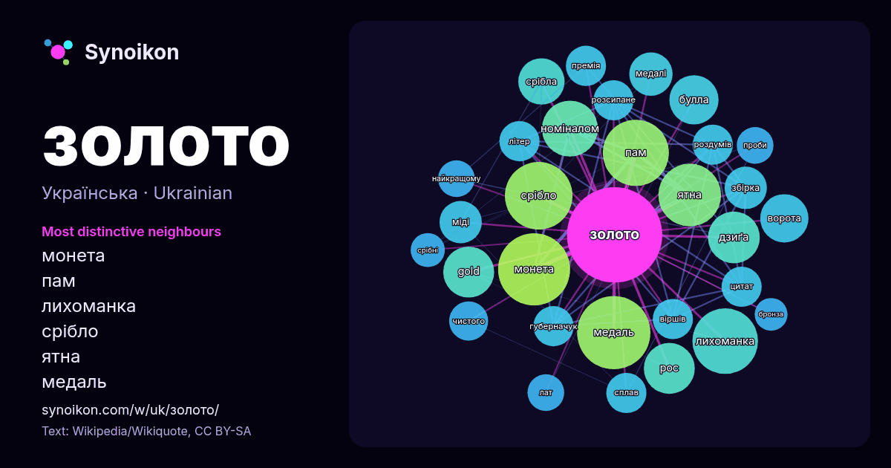

Українська · список слів дня
золото
“gold” · Слова довкола нього в 1196 входженнях із Вікіпедії, Wikiquote.

Найхарактерніші сусіди
- монета 53×
- пам 50×
- лихоманка 49×
- срібло 46×
- ятна 45×
- медаль 43×
- номіналом 33×
- дзиґа 31×
- gold 29×
- булла 28×
- рос 27×
- срібла 22×
- ворота 21×
- губерначук 19×
- розсипане 19×
- цитат 19×
- міді 19×
- роздумів 19×
- сплав 18×
- літер 18×
× = у скільки разів частіше, ніж у звичайному тексті Вікіпедії.
Найчастіші сусіди
- медаль 60
- монета 58
- срібло 51
- пам 49
- лихоманка 48
- або 46
- ятна 44
- номіналом 35
- дзиґа 30
- gold 29
- рос 29
- булла 27
- ворота 26
- року 26
- срібла 24
- світу 22
- медалі 21
- україни 21
- збірка 20
- міді 20
У контексті
- Сухозлітне золото, сухозлотне золото, сухозлітка, розм. позлі́тка, зах. позоло́тка, рідко сухозло́тиця, сухозоло́тиця (від «сухе злото»), сусальне золото (від Wikipedia snippets · Сухозлітне золото
- Зо́лото саморо́дне (рос. золото самородное; англ. native gold; нім. gediegenes Gold n) — мінерал класу самородних елементів. Хімічна формула: Au. Являє Wikipedia snippets · Самородне золото
- Питне золото — це суміш води та золота. Давні алхіміки першими почали виготовляти і вживати питне золото. Вони думали, що воно придатне для вживання та Wikipedia snippets · Питне золото
- морі» (нід. De Krim. Goud en geheimen van de Zwarte Zee), також «Скіфське золото» — виставка історико-культурних цінностей, яка проходила з 3 липня 2013 Wikipedia snippets · Скіфське золото (виставка)
- «Маккенове золото» (англ. Mackenna's Gold, в радянському кінопрокаті «Золото Маккенни») — художній фільм-вестерн виробництва США. Фільм знято в 1969 році Wikipedia snippets · Маккенове золото
- … ureus, давньофр. or) — тинктура у геральдиці. Належить до класу геральдичних металів. У кольоровій графіці позначається золотим або жовтим Wikipedia snippets · Золото (геральдика)
- Клонда́йкська золота́ лихома́нка (англ. Klondike Gold Rush; також Юконська золота лихоманка, Аляскинська золота лихоманка) — міграція шукачів золота на Клондайку Wikipedia snippets · Клондайкська золота лихоманка
- «Золота дзиґа» (англ. Golden Dzyga) — українська національна кінопремія, яку присуджують за професійні досягнення у розвитку українського кінематографу Wikipedia snippets · Золота дзиґа
Інші слова
Попередньо обчислено 2026-10-09 з типовими налаштуваннями (±5 слів, середній корпус). Інтерактивна карта може оновити дані наживо.
Інтерфейс перекладено машинно; виправлення вітаються.